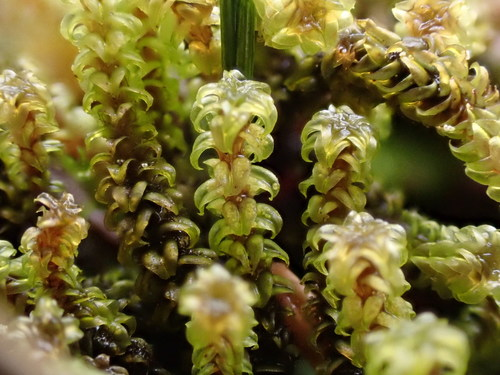

Meesiaceae
Meesia Moss Family
Meesiaceae is a small but distinctive family of acrocarpous mosses primarily found in nutrient-rich, often calcareous wetlands such as fens, bogs, wet meadows, and seepage areas. They typically form dull, green to yellowish-green tufts or sods. The family is particularly noted for its often remarkably long setae (stalks) bearing unique, typically pear-shaped (pyriform) and asymmetric capsules.
Overview
The Meesiaceae family is placed in the order Meesiales (or sometimes included within Splachnales). It is a small family containing only 3 or 4 genera (Meesia, Amblyodon, Paludella, and sometimes Leptobryum - though the latter is often placed elsewhere) and about 10-12 species in total. These mosses have a predominantly Northern Hemisphere, circumboreal distribution, often associated with specific minerotrophic wetland conditions.
Besides their specific habitat preferences, the Meesiaceae are most famous for their sporophytes. The seta is often exceptionally long relative to the gametophyte size, elevating the capsule far above the plant tuft. The capsule itself is typically asymmetric, curved, and pyriform (pear-shaped) with a distinct neck. The peristome (tooth structure) is double but often highly modified or reduced compared to typical Bryalean or Hypnalean mosses.
Ecologically, Meesiaceae are indicators of specific wetland conditions, particularly nutrient-rich fens. Their presence can signify specific hydrological and chemical environments. Due to habitat specificity, some species are considered rare or threatened in parts of their range due to wetland drainage and habitat alteration.
Quick Facts
- Scientific Name: Meesiaceae
- Common Name: Meesia Moss Family
- Number of Genera: Approximately 3-4
- Number of Species: Approximately 10-12
- Distribution: Primarily circumboreal (Northern Hemisphere), in nutrient-rich wetlands.
- Evolutionary Group: Bryophytes - Mosses - Meesiales
Key Characteristics (Moss Morphology)
Gametophyte: Growth Form and Habit
Plants are acrocarpous, forming loose to dense tufts or sods, often tall and erect. Stems are typically simple or sparsely branched, often covered below with reddish-brown rhizoids (tomentum). Color is usually dull green, yellowish-green, or brownish-green.
Gametophyte: Stems
Stems possess a central strand. Rhizoids are often conspicuous, especially on lower parts of the stems.
Gametophyte: Leaves
Leaves are variable in shape and arrangement among genera. They can be erect-spreading to secund (curved to one side), often ovate-lanceolate, lanceolate, or sometimes broader (e.g., squarrose-recurved in Paludella). Leaf apices are typically acute or obtuse. Margins are often plane or recurved, entire or serrulate near the apex. The costa is single and strong, usually ending just below the apex, at the apex, or slightly excurrent. Leaf cells are typically smooth, relatively short, quadrate, rectangular, or hexagonal.
Sporophyte: Seta, Capsule, and Peristome
Sporophytes are highly distinctive. Sexual condition is variable (autoicous, dioicous, or synoicous). The seta is typically extremely long, slender, and flexuose (wavy). The capsule is exserted far above the gametophyte, characteristically pyriform (pear-shaped), strongly asymmetric, and curved, with a distinct, often long neck (apophysis). The capsule mouth is often oblique. The operculum is small and conical. The peristome is double, but often highly modified and reduced; the exostome teeth may be short and obtuse, and the endostome segments can be rudimentary or adherent to the exostome.
Field Identification (Mosses)
Identifying Meesiaceae often relies on habitat, gametophyte features, and especially the unique sporophytes:
Primary Identification Features (Field/Hand Lens)
- Habitat: Restricted to nutrient-rich wetlands (fens, bogs, wet meadows, seepage areas), often calcareous.
- Growth form: Acrocarpous tufts or sods, often tall.
- Extremely long setae: If sporophytes are present, the very long, slender stalks are a key indicator.
- Unique capsule shape: Pear-shaped, asymmetric, curved capsules held high above the plants.
- Leaf costa: Strong single costa ending near the apex.
- Paludella specific: Look for distinctly squarrose-recurved leaves arranged in 3 or 5 ranks.
Secondary Identification Features (Microscope often needed)
- Cell shape: Relatively short, smooth, quadrate to hexagonal/rectangular laminal cells.
- Peristome structure: Examination of mature capsules reveals the reduced/modified double peristome.
- Leaf arrangement details: Confirming 3- or 5-ranking in Paludella.
Common Confusion Points (Other Mosses)
- Bryaceae (e.g., Bryum): Many grow in moist places and are acrocarpous, but typically have longer leaf cells, different capsule shapes (often pendent, symmetric), and well-developed double peristomes. Setae usually not as extremely long.
- Aulacomniaceae (Aulacomnium): Can grow in similar boggy habitats and form tufts, but often have ribbed capsules and may produce gemmae on stalks. Leaf cells different.
- Bartramiaceae (e.g., Philonotis): Often in wet places, but typically have papillose leaf cells and spherical, ribbed capsules.
- Splachnaceae (Splachnum, Tayloria): Also in order Splachnales/Meesiales, often with long setae and specialized capsules (sometimes brightly colored or with very large necks/hypophyses adapted for insect dispersal), but typically grow on dung or decaying animal matter, not directly in fens.
- Catoscopiaceae (Catoscopium): Grows in calcareous fens, acrocarpous, but has very small, nearly black, erect capsules on shorter setae.
Field Guide Quick Reference (Mosses)
Look For:
- Habitat in rich fens/wetlands
- Acrocarpous tufts/sods
- Extremely long, slender setae (if fertile)
- Pear-shaped, asymmetric capsules (if fertile)
- Strong single costa
- Dull green appearance
Key Variations:
- Leaf shape and orientation (lanceolate, ovate, squarrose)
- Presence/absence of sporophytes
- Leaf ranking (3- or 5-ranked in Paludella)
- Plant height and tuft density
Notable Genera
The family consists of only a few, but distinct, genera:

Meesia
(Genus)
The type genus. Includes species like M. longiseta (famous for its extremely long seta) and M. triquetra (often with leaves somewhat ranked in 3 rows). Found in rich fens and bogs. Leaves typically ovate-lanceolate with obtuse apices.

Amblyodon
(Genus)
Monotypic genus (A. dealbatus). Found in calcareous fens and wet dune slacks. Resembles some Bryum species vegetatively but has the characteristic long seta and pyriform capsule of Meesiaceae. Leaves ovate-lanceolate, often whitish-green.

Paludella
Comb Moss (Genus)
Monotypic genus (P. squarrosa). Highly distinctive due to its robust size and leaves that are strongly squarrose-recurved (spreading outwards then bent sharply back) and arranged in 3 or 5 distinct ranks, giving stems a square or star-shaped appearance in cross-section. Found in rich fens.
Phylogeny and Classification
Meesiaceae is placed in the order Meesiales within the class Bryopsida. This order is small and sometimes considered closely allied or part of the Splachnales order, which also includes families adapted to nutrient-rich substrates (like Splachnaceae growing on dung). Both orders share features like often long setae and specialized capsules, suggesting adaptations related to spore dispersal in specific environments.
Molecular data supports Meesiales as a distinct lineage. Key evolutionary trends within the family include specialization to minerotrophic wetland habitats, the remarkable elongation of the seta (likely for elevating spores above dense fen vegetation), and the development of the unique pyriform, asymmetric capsule with a modified peristome.
Position in Plant Phylogeny
- Kingdom: Plantae
- Division: Bryophyta (Mosses)
- Class: Bryopsida
- Order: Meesiales
- Family: Meesiaceae
Evolutionary Significance
The Meesiaceae family showcases:
- Habitat Specialization: Strong adaptation to specific, nutrient-rich wetland environments (fens).
- Extreme Sporophyte Modification: The exceptionally long seta represents a significant investment and adaptation, likely for spore dispersal over surrounding vegetation.
- Unique Capsule Morphology: The pyriform, asymmetric capsule shape is highly characteristic and likely related to dispersal mechanisms or developmental constraints.
- Phylogenetic Position: Represents a distinct lineage among acrocarpous mosses, highlighting diversification related to specialized habitats and reproductive strategies.